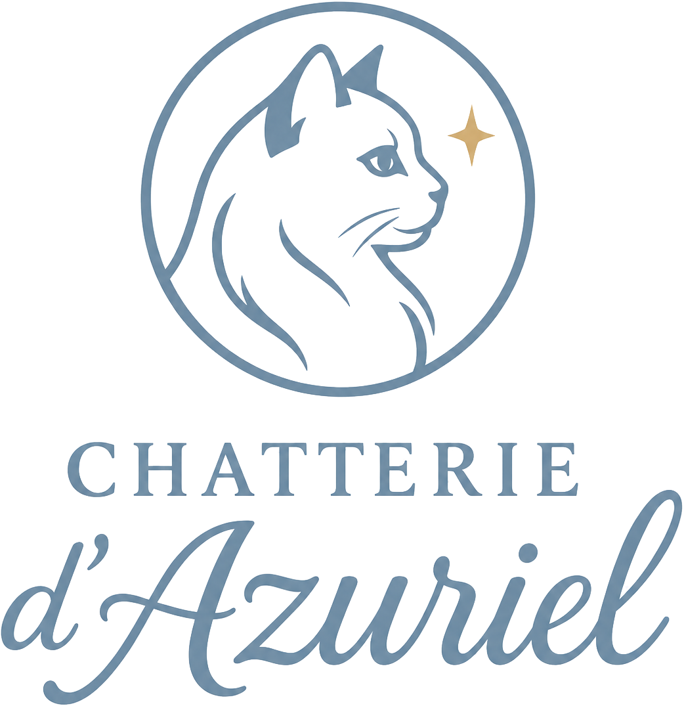
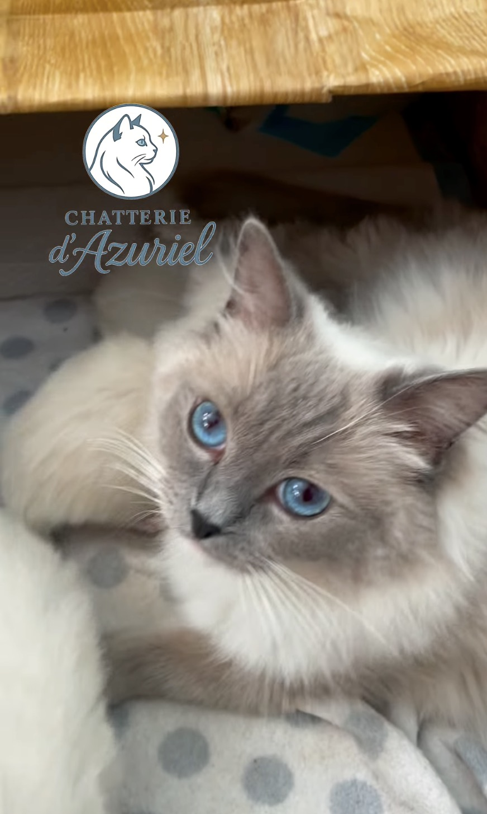
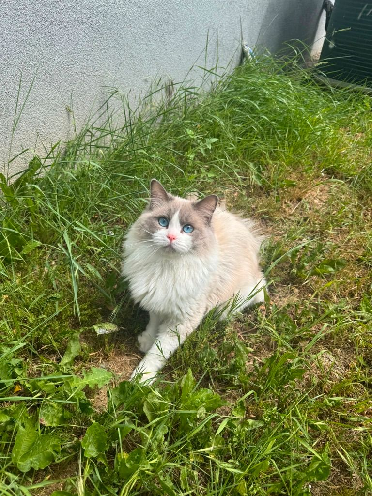
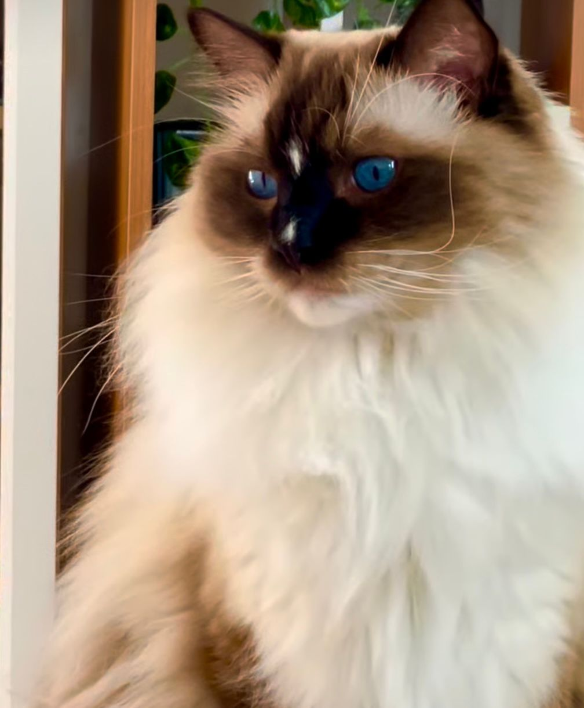
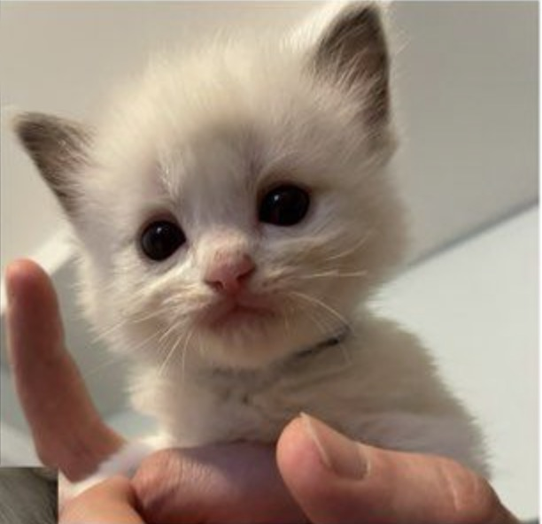
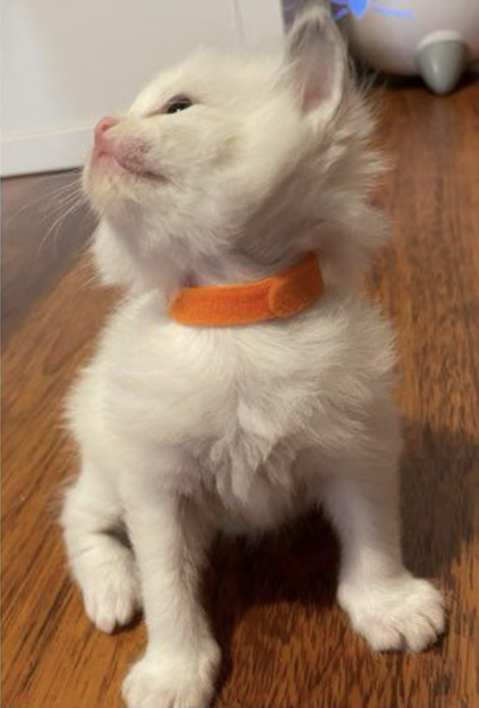
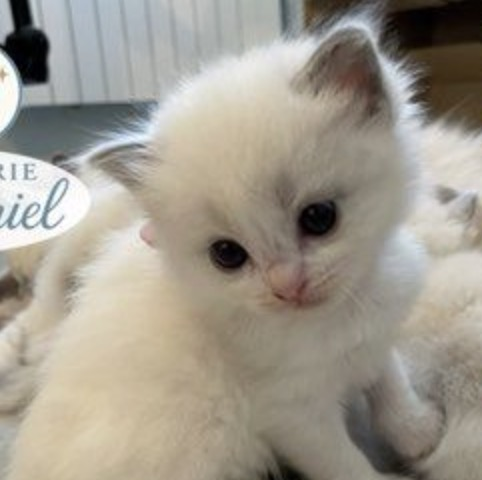
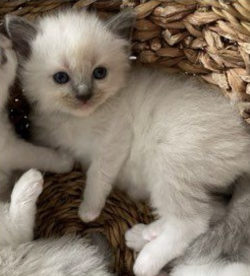
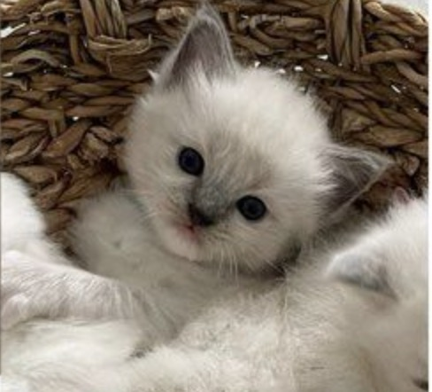

Des chatons doux, câlins et sociables, élevés en pleine maison et inscrits au LOOF.
Le Ragdoll est un grand chat au poil mi-long et aux yeux d'un bleu profond, réputé pour son caractère exceptionnellement doux. Il se détend dans les bras, suit sa famille partout et adore les câlins.
Affectueux et calme, il cherche le contact et se love volontiers contre vous.
Patient avec les enfants, il s'entend aussi très bien avec chiens et autres chats.
Sa robe soyeuse et son regard azur sont la signature de la race.
Nos reproducteurs sont testés génétiquement (CMH & PKD) et négatifs FIV/FeLV. La santé de nos chatons commence par la leur.

Blue mitted Ragdoll, très douce et câline. Une maman tendre et attentive.

Un mâle majestueux au grand gabarit, au tempérament posé et élégant. Yumi ne fait pas partie de notre chatterie : nous avons fait appel à lui pour une saillie externe, choisi avec soin pour ses qualités et son pedigree.

Portée née le 5 mai 2026 de Yuzu & Yumi — 5 chatons Ragdoll LOOF, qui grandissent paisiblement auprès de leur maman.





Le Ragdoll est sans doute l'un des chats les plus doux qui soient. Calme, affectueux et très attaché à ses humains, il adore les câlins et suit sa famille de pièce en pièce. On le surnomme « poupée de chiffon » parce qu'il se relâche complètement quand on le prend dans les bras.
Oui, c'est l'une de ses plus belles qualités. Patient et tolérant, il supporte bien l'animation d'une maison et les câlins des plus petits. Nos chatons grandissent en pleine maison, habitués aux bruits du quotidien et à la présence d'enfants.
Absolument ! Le Ragdoll est si sociable qu'on le compare souvent à un chien. Il cohabite généralement très bien avec un chien, surtout si celui-ci est calme et habitué aux chats. Une présentation en douceur, et tout le monde devient vite copain. 🐶🐱
Très bien aussi. Le Ragdoll a bon caractère et accepte volontiers la compagnie d'un autre chat ou d'un autre animal. Si vous êtes souvent absent, adopter deux chatons est même une excellente idée : ils se tiennent compagnie.
Le Ragdoll supporte quelques heures de solitude, mais il aime la compagnie et peut s'ennuyer s'il reste seul trop longtemps. Laissez-lui des jeux, un arbre à chat et, idéalement, un compagnon. En contrepartie, il vous accueillera à la porte comme un vrai pot de colle. 🥰
Oui, nous recommandons de le garder à l'intérieur. Très confiant et pas méfiant pour un sou, le Ragdoll n'a pas l'instinct de la rue et risquerait gros dehors. Un balcon sécurisé, un jardin clôturé ou des sorties au harnais lui offriront l'air libre en toute sécurité.
C'est un grand chat à la croissance lente : il atteint sa taille adulte vers 3 à 4 ans. Les mâles pèsent souvent 6 à 9 kg, les femelles 4 à 6 kg. Bien entouré, un Ragdoll vit en moyenne 12 à 17 ans.
Oui. Chaque chaton part avec son pédigrée LOOF (Livre Officiel des Origines Félines), qui atteste de ses origines et de son appartenance réelle à la race. En France, sans pedigree LOOF, un chat ne peut pas légalement être vendu comme « Ragdoll ».
Oui. Yuzu et Yumi sont testés génétiquement pour les deux maladies héréditaires du Ragdoll — la CMH (cardiomyopathie hypertrophique) et la PKD/RKD (polykystose rénale) — et sont négatifs au FIV et au FeLV.
À partir de début août, soit environ 12 semaines (3 mois). Nous ne laissons jamais partir un chaton avant : il a besoin de rester auprès de sa maman et de sa fratrie pour être bien sevré, propre, vacciné et sociabilisé.
Chaque chaton part avec : son pédigrée LOOF, l'identification par puce électronique, ses primo-vaccins, un vermifuge à jour, un contrat de vente, un certificat vétérinaire de bonne santé, et un livret d'accueil avec quelques petites surprises. ✨
Bonne nouvelle : le poil mi-long du Ragdoll n'a presque pas de sous-poil, il s'emmêle donc peu. Un brossage 1 à 2 fois par semaine suffit (un peu plus pendant les mues). C'est un chat plutôt facile à entretenir.
Il perd un peu ses poils, surtout en période de mue, mais moins qu'on ne l'imagine grâce à son faible sous-poil. En revanche, aucun chat n'est vraiment hypoallergénique : en cas d'allergie, mieux vaut passer un peu de temps auprès d'un Ragdoll avant de se décider.
Une alimentation de qualité, riche en protéines animales, est idéale pour sa belle robe et sa santé. Nous vous indiquons à l'adoption ce que mange déjà votre chaton, pour une transition tout en douceur.
Nos chatons sont proposés à 1 500 €. Ce prix reflète tout ce qui entoure un chaton bien né : pédigrée LOOF, tests de santé des parents, suivi vétérinaire, vaccins, identification et des mois de soins et de socialisation. Un prix trop bas cache souvent des économies… que l'on finit par payer chez le vétérinaire.
La réservation se fait après un échange avec nous, la signature du contrat de réservation et le versement d'un acompte de 30 % (soit 450 €). Vous pouvez nous écrire par email ou via Instagram. Le statut de chaque chaton (disponible / réservé) est tenu à jour sur cette page.
Avec plaisir. Rien ne remplace une rencontre : vous verrez où grandissent les chatons et ferez connaissance avec leur maman Yuzu. Si une visite n'est pas possible, nous proposons volontiers photos, vidéos et un appel WhatsApp.
Pas de livraison pour le moment : les chatons sont à venir chercher sur place, à Strasbourg / Lingolsheim. C'est aussi l'occasion de faire connaissance et de découvrir leur lieu de naissance. 🏡
Oui, toujours. Une fois le chaton chez vous, nous restons disponibles pour toutes vos questions (alimentation, soins, comportement). Adopter chez nous, c'est rejoindre une petite famille : on adore avoir des nouvelles et des photos de nos bébés devenus grands ! 📸
On nous le demande plus souvent qu'on ne le croit… alors répondons avec le sourire : c'est non. Un grand non, mais tout en tendresse 🤍. Un chaton Ragdoll ne se troque pas : derrière lui, il y a un pédigrée, des parents testés, des vaccins et des mois de soins. Et surtout, votre minou, lui, n'a pas de prix — il vous a choisi, vous. Gardez-le précieusement, faites-lui un gros câlin de notre part… et si un jour le cœur vous en dit, un chaton Ragdoll viendra l'accompagner. 🐱❤️
Écrivez-nous pour toute question, des photos ou une rencontre. Nous cherchons à nos chatons des familles aimantes et responsables. ❤️
📍 Strasbourg / Lingolsheim (67) · Élevage familial